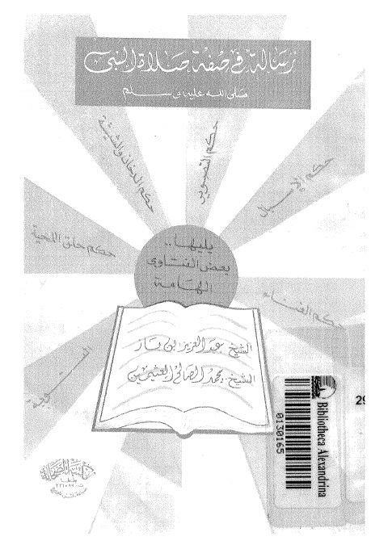

Downloads need an internet connection.
رسالة في صفة صلاة النبي ﷺ
Authors: عبد العزيز بن عبد الله بن باز محمد بن صالح العثيمين
Publishers: مكتبة الصحابة بطنطا
**▫️ العنوان: رسالة في صفة صلاة النبي ﷺ** ▪️ المؤلف: #عبد_العزيز_بن_باز • #محمد_صالح_العثيمين ▫️ الناشر: #مكتبة_الصحابة ▪️ تاريخ النشر: 1407 هــ ▫️ بلد النشر: طنطا، #مصر ▪️ الطبعة: 1 ▫️ عدد الأجزاء: 1 ▪️ الصفحات: 40 ▫️ نوع الوعاء: #كتاب ▪️ التصنيف الرئيسي: #الفقه_وأصوله ▫️ التصنيف الفرعي: #الفقه_الصلاة ۪